15 – 30 分钟
← 本环节含全部分析与方案内容
45 – 60 分钟
后续专题 · 待补充资料
讨论清楚 LIMS 产品后续要拓展的行业——这决定了数蚕后续主营业务的走向。
给予数蚕各业务线的 功能/优化建议、业务建议、经营建议 等。
第一环节完成"分析与方案同步"；第二环节开放讨论；第三环节在补充资料后专门收敛定位 · 规划 · 重心。
15 – 30 分钟 · 含全部市场研判、策略推断与方案内容
产品在"存量行业够用"，在"增量行业不够"——问题不在"有没有系统"，而在"能不能低成本复制"。
关键风险：用"一客一手工定制"对抗巨头的"低代码自助配置"，在成本与交付速度上双输。
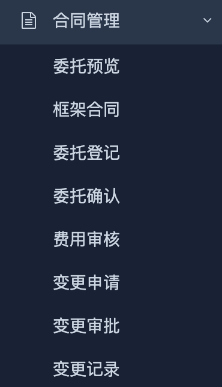
① 合同管理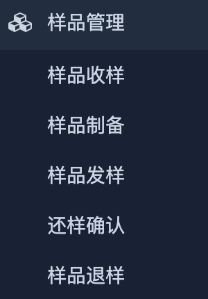
② 样品管理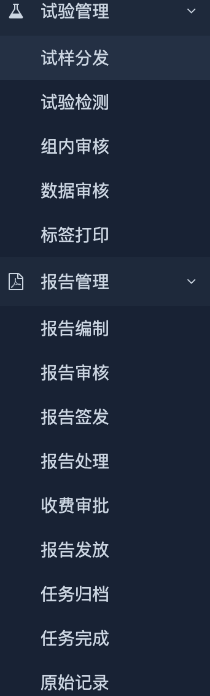
③ 试验管理主线覆盖 委托→样品→试验→报告 完整闭环；与 flow-stages.js 定义的 18 阶段流程一致。
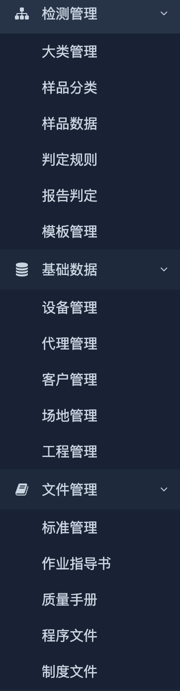
⑤ 检测/基础/文件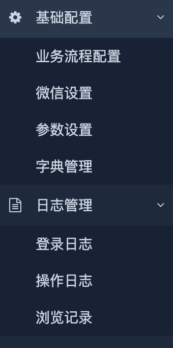
⑥ 基础配置/日志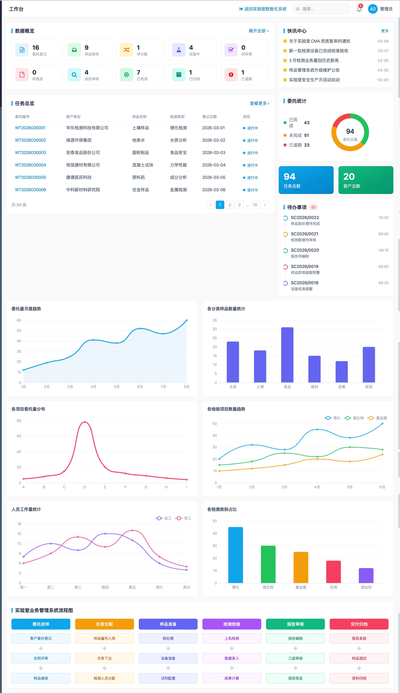
⑦ 工作台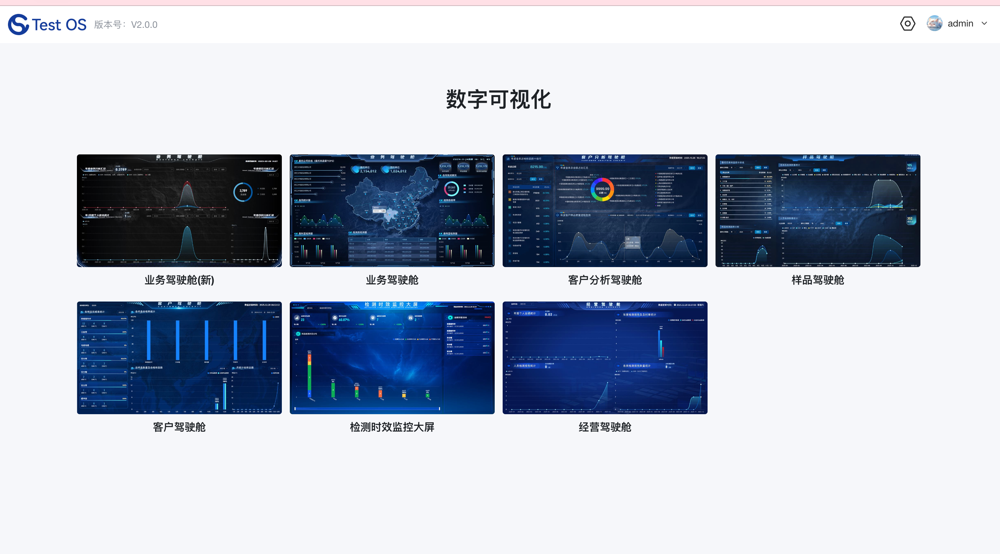
⑧ 数字可视化/TestOS已具备：检测配置 + 模板判定 + 合格证短链 + 多驾驶舱
缺口：设备计量全生命周期 · CNAS 电子签章 · 移动端/PDA · 深度 ERP/MES 集成 · SPC/OCAP
电网检测等行业存在指定供应商机制，数蚕 LIMS 在封闭市场内增量空间有限，增长遇到天花板。
结论：继续深耕封闭市场，难以支撑团队与产品的可持续扩张。
从 封闭/指定市场 走向 第三方开放市场
从"指定供应商的确定性"进入"充分竞争的不确定性"。
客户需求多样化、标准高——CNAS/CMA、多品类、快扩项，现有产品需补齐模块或定制。
易陷入"一客一开发"，5 人团队人力被摊薄，无法沉淀通用产品。
转型不是"要不要做"，而是"用什么姿势做"。
全球 LIMS 2025 年 28.8 亿美元、CAGR 12.5%；本土低代码可将开发周期缩短 50%、成本降 60%、减码 70%。
LIMS 行业深度研究报告 · 市监总局 2025 统计
巨头武器＝低代码（减码 70%）＋设备数采 99% 调通率＋不限用户数＋ AI/信创；我们＝简单 ＋ 高度定制。
中小型机构：预算有限、流转快、扩项频繁 → 要低代码＋模板＋最低 TCO；中大型已普及、中小型空白。
这三条把策略从"我方主张"升级为 有数据支撑的市场事实——也是后续推断的逻辑起点。
| 行业/场景 | 机构特征 | LIMS 成熟度 | 核心需求 | 竞争强度 | 数蚕 |
|---|---|---|---|---|---|
| 机动车检验 | 17,349 家 · 322 亿 | 高·垂直 | 工位数采 · GB38900 · PDA | 高 | ✕ |
| 环境监测 | 7,089 家 · 552 亿 | 高·信创 | GPS · 移动端采样 · HJ 标准库 | 极高 | ✕ |
| 建筑工程 | 5,299 家 · 748 亿 | 中·金现代领跑 | 低代码扩项 · 集团分布式 | 中高 | △ |
| 建筑材料 | 3,799 家 · 416 亿 | 中 | IoT 温湿度 · 养护追溯 | 中高 | △ |
| 食品/接触材料 | 1,740 家 · 244 亿 | 中 | 全链路追溯 · HACCP | 中高 | △ |
| 电子电器 | 888 家 · 330 亿 | 中·白码领跑 | MDM · RoHS · 数采 | 中高 | △ |
| 机械/汽车 | 579 家 · 258 亿 | 中高 | ELN · 设备预约 · NVH 数采 | 高 | △ |
| 化工/煤焦化 | 537 家 · 81 亿 | 高·定制 | 危化品库存 · MES · OCAP · 乌海 | 极高 | ✕ |
| 电力/能源 | 612+527 家 · 268 亿 | 高·封闭 | 集团化 · 油煤质分析 · CNAS | 封闭/高 | 维持 |
| 药品/医学 | 351+63 家 · 109 亿 | 高·合规 | 21CFR · ALCOA+ · GMP | 极高 | ✕ |
| 轻工/纺织 | 326+298 家 · 187 亿 | 低·分散 | SaaS · 快扩项 · 低 TCO | 低中 | ★ 延伸 |
| 中小型 TIC（跨领域） | 5 万+ 小微主体 | 低·空白 | 快上线 · CNAS/CMA · 模板 | 中 | ★ 首锚 |
| 离散制造 QC | 企业内检实验室 | 低·空白 | 样品/设备/报告 · 轻 MES · 家联 | 中 | ★ 首锚 |
| 行业 | 三维天地 | 金现代 | 创腾 | 网星 | 白码 |
|---|---|---|---|---|---|
| 药品 | 广泛 | 核心 | 领跑 | 渗透 | 信创快渗 |
| 环境监测 | 广泛 | 深度 | — | 领跑 | 民营快渗 |
| 建筑工程 | 局部 | 领跑 | — | 广泛 | 局部 |
| 食品材料 | 广泛 | 领跑 | 局部 | 领跑 | 渗透 |
| 电子电器 | 领跑 | 广泛 | 局部 | 广泛 | 领跑 |
| 机械/汽车 | 广泛 | 领跑 | 局部 | 广泛 | 渗透 |
| 化工 | 广泛 | 渗透 | 领跑 | 领跑 | 渗透 |
| 能源/电力 | 渗透 | 领跑 | 广泛 | 渗透 | 快渗 |
| 轻工 | 广泛 | 广泛 | — | 广泛 | 广泛 |
金现代占重工业/集团化（华电 70+ · 长城 · 达能）；白码占轻工/消费电子（蓝禾 30 天上线）；数蚕不应进入已"领跑"区块。
白码启示：低代码+17025 标准落地是中小 TIC 的标配打法——数蚕不能拼"更便宜的传统定制"，必须拼"透明检测"差异化 + 应敏数采。
每份报告绑定唯一二维码 → 扫码可见人·机·料·法·环·过程视频·原始数据·证据链八大维度，证明检测过程真实可信。
检测人员资质 · 培训 · 授权
设备身份 · 校准状态 · 运行记录
样品唯一标识 · 全流程溯源
标准方法 · SOP 数字化执行
IoT 温湿度 · 环境合规监控
关键节点录像 · 不可篡改
仪器直采 · 告别手工誊写
审计追踪 · 数据回溯
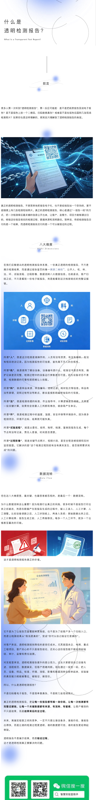
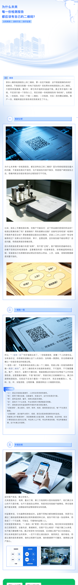
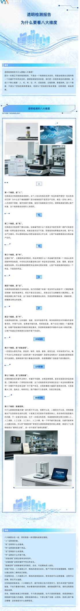
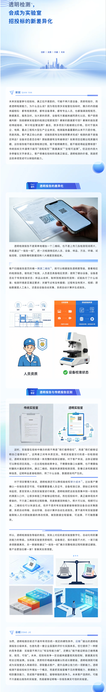
先锚定 1–2 个行业试水（建议：中小 TIC + 离散制造 QC），集中资源打透。
与标杆客户合作共创，共同开发缺失模块——买的是"产品资产"，不是"交付工时"。
不只看成本，更看战略意义；战略性亏损仅用于可复用模块 + 标杆案例。
把一次性投入，转化为可复用的透明检测系统能力，支撑后续同类客户快速复制。
亏可以，但只买"可复用模块 + 标杆案例"，不买"一锤子定制交付"。
以「透明检测系统」为纲，首锚 中小型第三方检测 ＋ 离散制造 QC 低端蓝海；用受约束的共创把家联这类项目沉淀成通用产品，而非逐单定制。
家联进 · 乌海退
仅当 第 ① 条得分高（买的是可复用资产） 且 第 ② 条通过。
来源：《典型标杆质量管理需求清单》脱敏 · 乌海市政府数字化水平评测指标
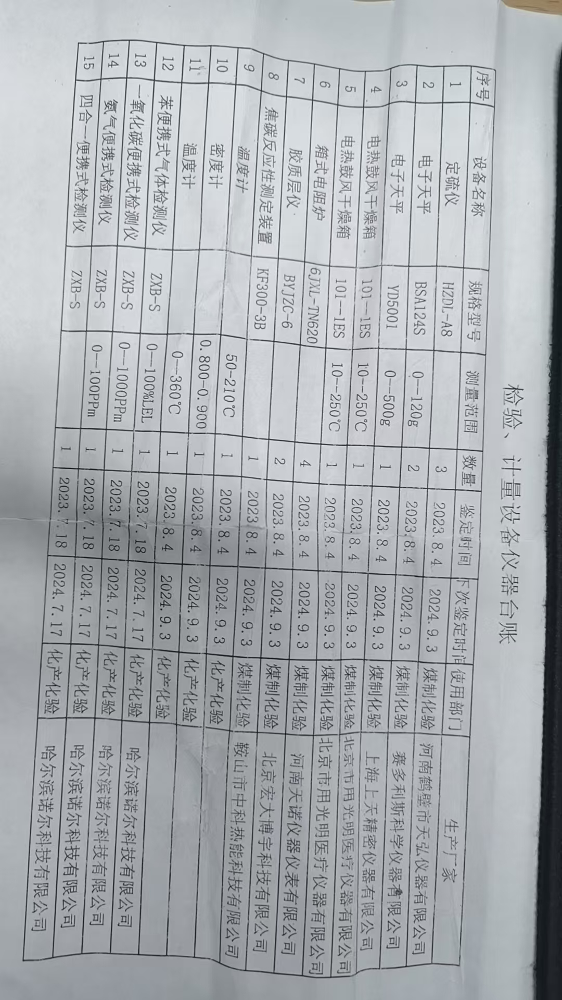
乌海本质是集团 QMS + MES 集成 + 50 台数采 + SPC 平台，远超 LIMS 边界；家联是标准检测实验室数字化，与战略锚点一致。
| 工作项 | 预估人天 | 说明 |
|---|---|---|
| 委托/样品/检测流程 · 制造场景适配 | 95 | 已有主线改造 · 字段/流程/权限 |
| 试验检测 + 原始记录 + 判定 | 85 | 核心检测闭环 · 模板配置 |
| 报告编制 + 签发流程 | 70 | 报告模板 · 审核链 |
| 设备管理 + 期间核查（缺失模块） | 55 | 台账 · 校准提醒 · 使用记录 |
| 基础数据 + 系统配置 | 40 | 客户/场地/字典/流程配置 |
| 联调 · 部署 · 培训 | 45 | 上线与验收支持 |
| 合计（34 万报价范围内） | 390 人天 | 390 × 600 = 23.4 万 · 留 177 人天缓冲（至 567 上限） |
| CNAS 电子签章（选配） | +60 人天 | 单独报价 · 可复用至通用产品 |
| 数采对接（待核算） | +80 人天 | 应敏数采能力 · 单独报价 |
对比乌海 ~1,267 人天 vs 家联 390 人天（同口径 600 元/人天）——投入密度与复用价值差异一目了然。
21CFR Part11 · ALCOA+ · CSV · 动物全生命周期
集团分布式 · 上万样品/日 · MES 工厂模型 · 乌海属此类
三维天地领导者 · 信创全栈 · GPS 防伪
瑞美（1500+）· 新威 · 垂直壁垒已成
巨头护城河 ＋ 5 人团队能力边界 ＝ 战略禁区。第二环节可讨论是否有例外。
以上为第一环节完整方案同步。行业最终选择与定位细节留待第三环节，在补充资料后专门讨论。
45 – 60 分钟
待下一轮补充资料后展开
务必完成的目标——讨论清楚 LIMS 拓展行业——将在本环节拍板。